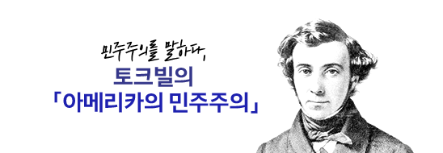

시카고 플랜으로 불리는 [The Great Book Program]은 1929년 시카고 대학에서 시작된 인문학 프로젝트를 말합니다.
존 스튜어트 밀의 독서법(인문 고전 읽기)으로도 알려진 시카고 플랜은 문학, 철학, 역사 등 각종 인문고전 100권을 졸업 전까지 읽도록 하는 프로그램입니다.
정규 교과과정 대신 운영한 이 독서 프로그램은 시카고 대학을 최고의 명문 대학으로 올려놓았을 뿐만 아니라 100여명에 달하는 노벨상 수상자를 배출하는 데에 기여했다고 합니다.
인문 고전이라 하면 그 무게감 때문에 다가가기 쉽지 않지만 그래도 한.번.쯤. 깊게 탐독할 만한 가치가 있는 책이지요.
시카고 플랜 도서 중 14권을 '고전맛집' SERICEO에서 맛깔나게 읽어드리겠습니다.
시카고 플랜 중 철학 도서 14권은 <SALON de SERICEO 서양철학> 에서 만날 수 있습니다.
시카고 플랜 004
정치학 | 아리스토텔레스
빈곤에서 벗어나기 위한 각고의 노력 끝에 물질적 풍요를 이뤄낸 인류. 하지만 현재의 삶은 전보다 나아졌다고 말할 수 있을까요? '좋은 삶'에 대해 고민한 철학자, 아리스토텔레스가 21세기를 사는 우리에게 어떤 메시지를 던지고 있는지 <정치학>을 통해 알아봅니다.
시카고 플랜 005
영웅전 | 플루타르코스
"그대의 삶이 이 영웅전에 등장하는 영웅들의 삶과 많이 닮았다." – 플루타르코스
영웅이란 어떤 사람일까요? 알렉산드로스와 카이사르 등 로마 그리스 시대의 영웅 50인에 관해 쓴
<플루타르코스 영웅전>을 통해 힌트를 얻어보세요.
시카고 플랜 011
국부론 | 애덤스미스
자본주의의 기틀을 다졌다고 평가받는 >국부론>. 하지만 자본주의의 어두운면이 드러나면서 「국부론」이 틀린 것이 아니냐는 시각이 일고 있습니다. 과연 애덤 스미 스는 「국부론」을 통해 무엇을 이야기하고 싶었던 것일까요?

시카고 플랜 013
아메리카의 민주주의 | 토크빌
1831년, 아메리카 여행길에 오른 프랑스 사상가 토크빌. 그는 아메리카를 탐방하며 자국 프랑스 민주주의의 나아갈 길을 묻고 또 물었습니다. 그가 바라본 민주주의의 본질은 무엇이었을까요?
Salon de SERICEO
위대한 고전과 함께
통찰의 꽃을 피움
시카고 플랜 018
오디세이아 | 호메로스
서양 역사와 철학 그리고 문학을 이해하기 위해서 꼭 읽어야 하는 필독서로 꼽히는 호메로스의 오디세이아 ( Odysseia / 오디세우스의 노래 ). 그리스 신화 속에 등장하는 오디세우스를 주인공으로 그의 길고 긴 모험담을 담아낸 작품입니다. 이 신화 속 영웅 이야기를 통해 무엇을 얻을 수 있을까요?
시카고 플랜 019
오이디푸스 왕 | 소포클레스
벗어날 수 없는 끔찍한 운명 앞에서 도덕적이고 고결한 선택을 하는 진정한 영웅, 오이디푸스. 소포클레스의 <오이디푸스 왕>을 통해 우리의 삶을 돌아보며 '어떻게 살아야 하는가'에 대해 생각하는 시간을 가져보세요.

시카고 플랜 036
향연 | 플라톤
고대 그리스 최고 지성인들의 저녁 술자리 모임으로의 초대. 이들의 저녁 식탁은 어떤 모습일까요? 술을 마시는 행위와 철학은 어떤 관계가 있을까요? 플라톤이 그려낸 취중 대화 <향연>을 통해 알아봅니다.
시카고 플랜 056
니벨룽겐의 노래
유럽 기사문학의 걸작이자 북유럽을 대표하는 영웅서사시 <니벨룽겐의 노래>. 다양한 전설 속에서 그들이 죽음보다 소중하게 여긴 가치는 과연 무엇이었을까요?
시카고 플랜 058
에세 | 몽테뉴
나의 판단이 바른지, 내가 지금 제대로
살고 있는지, 앞으로 어떻게 살아야
하는지 등에 대한 답을 주는 책이
여기 있습니다.
프랑스의 철학자
몽테뉴의 저서 <에세>입니다.
시카고 플랜 061
실낙원 | 존 밀턴
수많은 사람의 상상을 자극하며 20세기 이후 대중매체에 나오는 천국과 지옥, 선과 악의 이미지를 정형화하는 데 큰 역할을 한 존 밀턴의 <실낙원>을 자세히 살펴봅니다.
시카고 플랜 094
종의 기원 | 다윈
'생명의 진화'에 대한 인류의 세계관을 완전히 뒤바꿔 놓은 위대한 과학자, 다윈.
<종의 기원>을 통해
다윈이 주장한 진화론의 핵심과 진화론이 과학계에 미친 영향을 확인해 봅니다.
시카고 플랜 099
바가바드 기타 | 마하바리타
내 삶 속에서 원치 않게 일어나는 절망과 고통을 이겨내려면 어떻게 해야 할까요? 전쟁 같은 상황에서 자유로워질 수 있는 혜안을 제시하는 책. 인도의 행동지침서 <바가바드 기타>를 만나봅니다.